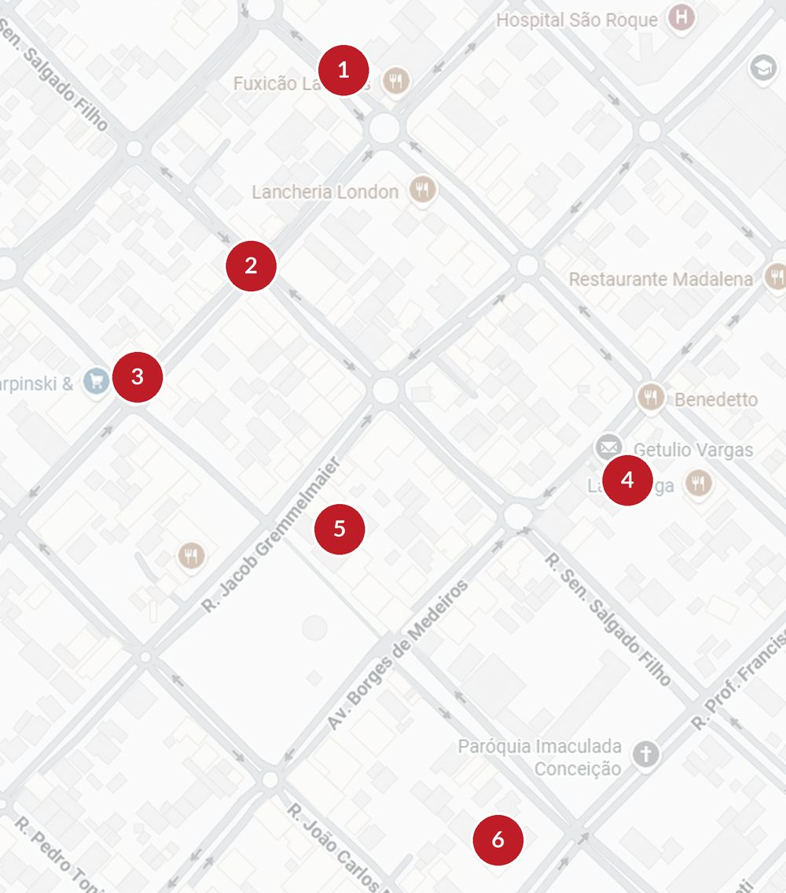

Sua marca onde
o povo realmente está.
O Portal Tchê TV é uma rede de televisores instalados em locais de grande fluxo de pessoas, exibindo ofertas, marcas e serviços de forma automática e contínua. Enquanto o público espera, circula ou consome, sua marca está ali: visível, ativa e presente.

Não basta estar na tela.
É preciso estar na hora certa.
Cada ponto tem seu próprio ritmo ao longo do dia. O índice mostra quando cada tela é mais vista — de 0 a 100, sempre em relação ao pico daquele ponto.
Índice relativo: 100% é o horário de maior visibilidade daquele ponto, não um número absoluto de pessoas — por isso os valores não se comparam entre pontos diferentes. Pontos com dados públicos de movimento usam essa base; os demais são estimados por categoria de negócio, horário declarado e verificação presencial da tela. Revisado a cada semestre.